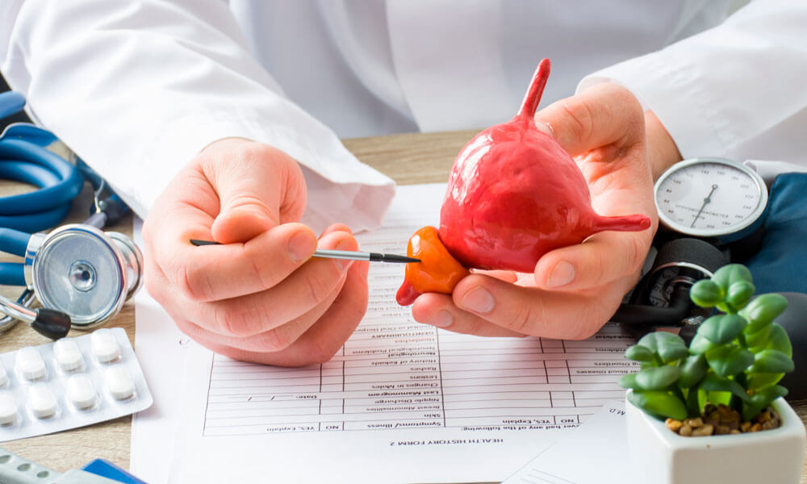
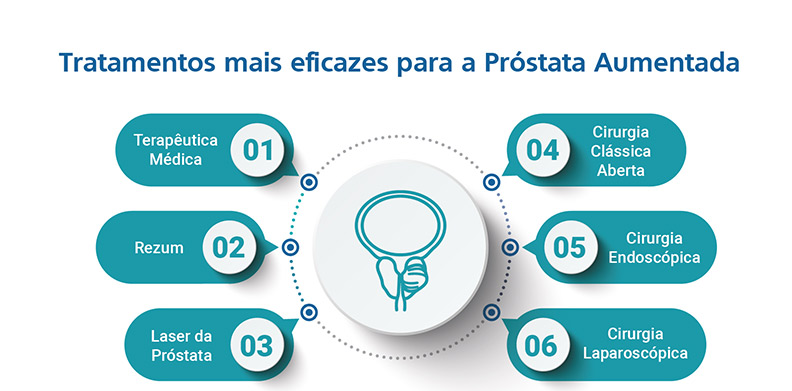

Prevenção e Tratamento:

A única forma de garantir a cura do câncer de próstata é o diagnóstico precoce. Mesmo na ausência de sintomas, homens a partir dos 45 anos com fatores de risco, ou 50 anos sem estes fatores, devem ir ao urologista para conversar sobre o exame de toque retal, que permite ao médico avaliar alterações da glândula, como endurecimento e presença de nódulos suspeitos, e sobre o exame de sangue PSA (antígeno prostático específico). Cerca de 20% dos pacientes com câncer de próstata são diagnosticados somente pela alteração no toque retal. Outros exames poderão ser solicitados se houver suspeita de câncer de próstata, como as biópsias, que retiram fragmentos da próstata para análise, guiadas pelo ultrassom transretal.
A indicação da melhor forma de tratamento vai depender de vários aspectos, como estado de saúde atual, estadiamento da doença e expectativa de vida. Em casos de tumores de baixa agressividade há a opção da vigilância ativa, na qual periodicamente se faz um monitoramento da evolução da doença intervindo se houver progressão da mesma.

Juntos na luta contra o câncer de próstata.
O diagnóstico precoce preserva o seu futuro.
Fonte: https://bvsms.saude.gov.br/novembro-azul-mes-mundial-de-combate-ao-cancer-de-prostata/